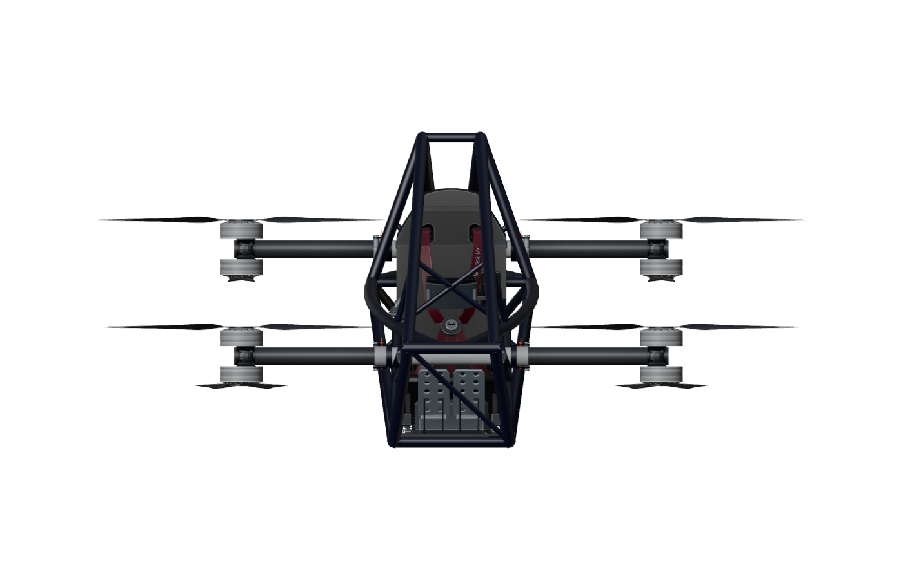
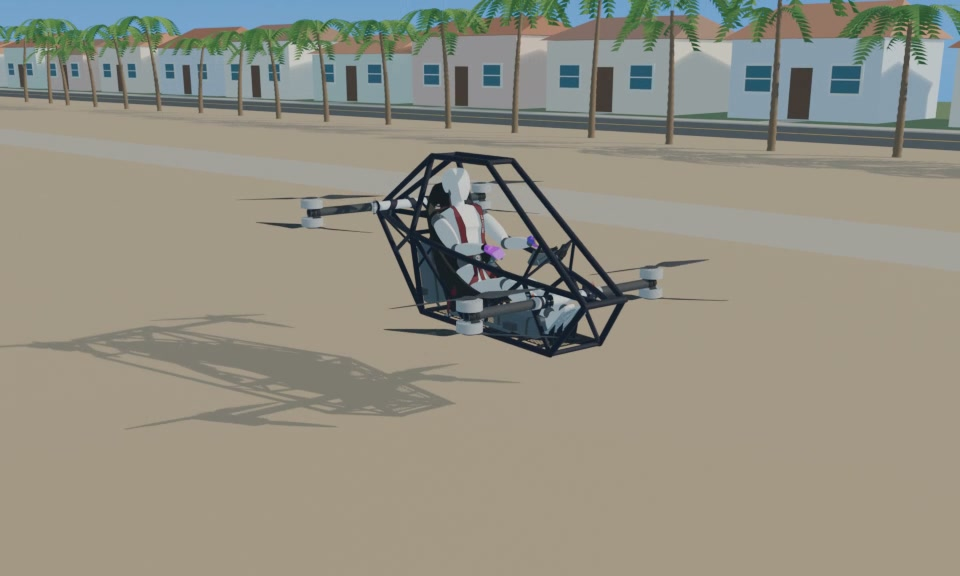

Access & seating
We began with the pilot’s position and developed the seat, surrounding frame, and rotor arrangement around it. Ease of entry and exit remains a design priority.
Personal eVTOL · Concept in development
A single-seat aircraft concept that begins with the person climbing aboard. We’re developing Maverick V1 around pilot access, seating, and the structure that surrounds them.

See the current concept
18-second accelerated CAD animation with music.
Visualization of the concept. Flight performance remains to be validated.
The starting point
Getting into an aircraft is part of the experience. So is the position we sit in, the controls we reach for, and how we get out. Those questions shaped the first layout of Maverick V1.
We began with the pilot’s position and developed the seat, surrounding frame, and rotor arrangement around it. Ease of entry and exit remains a design priority.
We’re showing the exposed chassis so the layout can be examined. Bodywork and occupant protection are part of the ongoing design work.
The current layout places eight rotors across four propulsion stations. Power requirements, control, and response to failures still need analysis and validation.
Where we are
We have a CAD design and animated visualizations. Structural analysis, propulsion validation, electrical integration, and physical testing are work ahead.

CAD visualization
We’re examining clearance around the occupant, exposure to released blades or fragments, and options for protective structures. Their effectiveness needs to be demonstrated.
Single-motor failure and complete loss of power pose different challenges. Controllability and a safe landing have yet to be demonstrated for this configuration.
The preliminary layout places battery packs below the seat and behind the occupant. Impact loads, thermal hazards, and protection need evaluation.
We’re working toward a documented set of dimensions, mass estimates, and power requirements. The regulatory path, including possible Part 103 applicability, remains to be established.
The conversation continues
Read the original comments and our responses where the conversations are happening.
The first concept, technical questions, and our early replies.
Rotor clearance, battery protection, and a closer look at the layout.
Recovery, protective structures, and ideas for future use cases.
Specific observations and use cases we’re carrying into the design discussion.
Rotor clearance
Recommended separating the occupant from the rotor planes, with additional clearance to account for failures.
Follow the exchangeBlade protection
Identified rear rotor proximity and asked about protection for the pilot and people on the ground if a blade separates.
Read the comment and repliesFuture use cases
Described interest in a two-seat aircraft with a wing and hybrid power for longer trips. We asked about seating, range, and intended use.
Read the comment and repliesHelp shape what comes next
A specific observation, a reference, or a use case can give us a better question to work on. We’re collecting the feedback and carrying it into the next design studies.